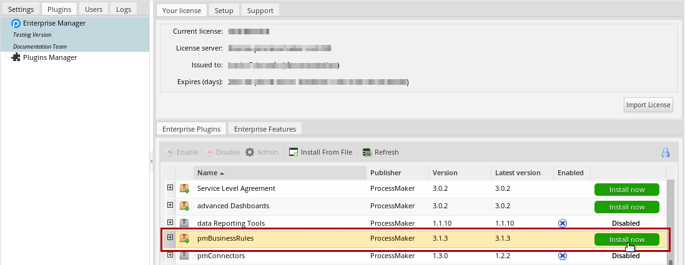
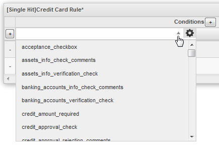
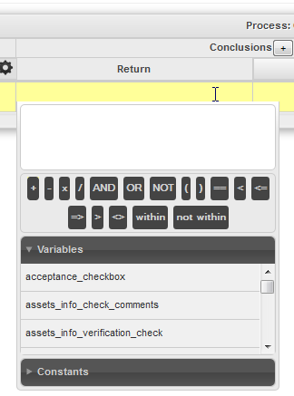
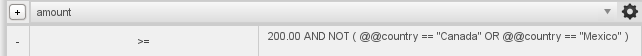
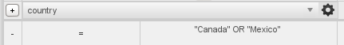
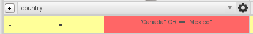
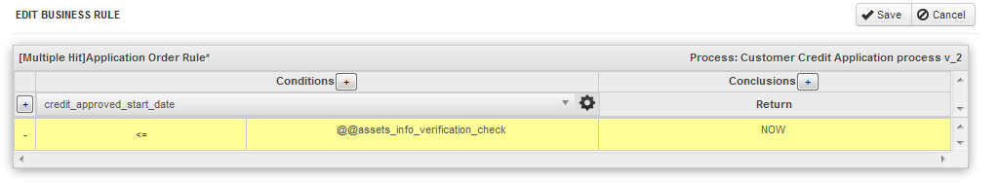
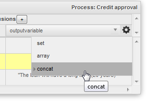

- Overview
- Requirements
- How the plugin works
- Installation and Configuration
- Considerations before starting
- Business Rule Configuration
- Managing Business Rules
- Creating a New Business Rule Set
- Editing the Rule Set Properties
- Opening in Editor
- Editing the Rule Set Source
- Exporting and Importing a Rule Set
- Deleting a Rule Set
- Business Rule Trigger
- Single-Hit Example: Credit Approval
- Creating the process
- Creating the Dynaforms
- Creating the Business Rule
- Creating the Trigger
- Starting the case
- Multi-Hit Example: Credit Approval
- Glossary
 Plugin Version:
3.1.3 |
Release Notes
Plugin Version:
3.1.3 |
Release Notes
Overview
A business rule is a set of conditions in a process that allows you to change output values based on process variables. A rule can enforce business policy, make a decision, or generate new data from existing data.
The Business Rules plugin helps process designers to define business logic rule sets and share them among cases. These rules are defined for each process by using a graphical interface that requires no coding, making rule definition easy to do. The rule sets are executed by a trigger.
The main objectives of the Business Rules plugin are:
- To apply business rules to all the cases in a process.
- To design business rules in a graphical interface which is easier to understand than trigger code.
- To allow process designers the ability to define, analyze, and test business rules while developing processes and running cases.
Requirements
ProcessMaker Compatibility
The plugin version 3.1.3 is fully compatible with the following ProcessMaker versions:
- 3.2.1 or later
How the plugin works
The following graphic shows how the Business Rules plugin works and the relation between its components:

- The PMBREvaluate() function evaluates a business rule set, which is defined for the process.
- The PMBREvaluate() function needs to be executed in a trigger, which is set to fire before the results of the business rule are needed in the process.
- Only the current case and its data are evaluated by the business rule set.
Installation and Configuration
If using ProcessMaker 2.5, the Business Rules plugin will be available once the Enterprise Edition plugin has been imported and its license has been activated. If using ProcessMaker Enterprise Edition 2.8 or later, the Business Rules plugin is available by default.
- To enable the Business Rules plugin, login with a user such as "admin" who has the PM_SETUPADVANCE permission in his/her role and then go to ADMIN > Plugins > Enterprise Manager. Either install the Business Rules plugin by clicking on
 Install from File and uploading the plugin file or by clicking on its Install Now button in the list of available plugins.
Install from File and uploading the plugin file or by clicking on its Install Now button in the list of available plugins. 
- After installing the plugin, make sure that the Business Rules plugin is enabled.

- Now the Business Rules option should appear under ADMIN > Plugins:

Considerations before starting
- Business rules can use data from most types of fields, but the following fields are unsupported:
- If using a Currency field in a business rule, values should have no currency symbol (such as $) and no thousands separator. Only the period (.) is allowed as a decimal separator.
- The Business Rules are evaluated when the PMBREvaluate() function is called in a trigger, so the trigger needs to be set to fire before the results of the Business Rules are used in the process. For example, if the Business Rules set the value of a field in a DynaForm, set the trigger to fire before the DynaForm.
- The Business Rules plugin evaluates rules using only the data defined inside the current case.
Business Rule Configuration
In order to create and edit business rules, login to ProcessMaker with a user such as admin, who has the PM_SETUPADVANCE permission in his/her role. Then, follow the steps listed below to add a business rule to a process:
- Create a business rule set.
- Create the trigger, which calls the PMBREvaluate() function which will evaluate the business rule set.
Managing Business Rules
To manage the existing Business Rules, go to ADMIN > Plugins > Business Rules:

The existing rules will be listed:

On the right-hand side of each business rule, the following group of buttons is provided to manipulate the business rule:
- New: Click on this button to define a new rule set.
- Import: Click on this button to import a rule set file, which should have the .pmrl extension.
- Edit Properties: Change the rule set properties.
- Open in Editor: Edit the conditions for a rule set.
- Edit Rule Set Source: Edit the rule set source generated when the business rule is created.
- Export: Export a rule set file with the .pmrl extension.
- Delete Rule: Deletes the selected business rule set.
Creating a New Business Rule Set
To create a new Business Rule, click on the New button and define the properties of the new rule set in the window that opens:

- Name: Provide a name for the rule set.
- Description: Enter a brief description of the rule set.
- Type: Select how the rule set will be evaluated:
- Single Hit: The business rule engine evaluates rules until finding the first condition which evaluates as true and then returns the results and executes any action defined in the rule.
- Multi Hit: The business rules engine evaluates all rules and for each condition evaluated as true, it executes any action defined in the rule. The returned value is the result from the last rule evaluated as true.
- Process: Select the process to which the rule set will apply. Note that only processes in the current workspace may be selected.
After defining the new rule set, click on Save. In next window the decision table is displayed, which defines the conditions and results for the rule set:

Where:
- The Title of the Rule Set. It can be edited by clicking on it.

- Title of the process where the business rules will apply.
- Conditions: This section defines the conditions which will be evaluated. Click on the + button to add additional condition columns. See Defining conditions in a Business Rule Set below.
- Conclusions: This section shows the results which are returned if the condition evaluates to true. By default, a true condition only results in a return value. To also set the value of a case variable when a condition is true, click on the + button to add more conclusion columns.
- The + button in the left column is used to add more conditions.
- To select which field will be compared in the conditions, click on the dropdown box at the top of the table and select one of the fields from the DynaForms in the process.

- Settings: click on the gear icon and select the format for the date, to convert the value of a date field to standard "YYYY-MM-DD" format or a UNIX timestamp (which is the number of seconds since January 1, 1970 00:00:00) so it can be used in comparisons:
- dateFormat('d-m-Y') to String: Converts a date in format "DD-MM-YYYY" or "DD/MM/YYYY" to "YYYY-MM-DD" format. Ex: "31/12/2014" ? "2014-12-31"
- dateFormat('d-m-Y') to Time: Converts a date in format "DD-MM-YYYY" or "DD/MM/YYYY" to a UNIX timestamp. Ex: "25-01-2008" ? 1200801600
- dateFormat('Y-m-d') to String: Converts a date in format "YYYY-MM-DD" or "YYYY/MM/DD" to "YYYY-MM-DD" format. Ex: "2014/12/31" ? "2014-12-31"
- dateFormat('Y-m-d') to Time: Converts a date in format "YYYY-MM-DD" or "YYYY/MM/DD" to a UNIX time stamp. Ex: "2000-01-25" ? 948772800
- dateFormat('Y-m-d H:i:s') to String: Converts a date in format "YYYY-MM-DD HH:MM:SS" or "YYYY/MM/DD HH:MM:SS" to "YYYY-MM-DD HH:MM:SS" format. Ex: "2014/11/03 23:01:30" ? "2014-11-03 23:01:30"
- dateFormat('Y-m-d H:i:s') to Time: Converts a date in format "YYYY-MM-DD HH:MM:SS" or "YYYY/MM/DD HH:MM:SS" to a UNIX time stamp. Ex: "2014-11-03 23:01:30" ? 1415070090
- Comparison Operator: Select the comparison operator which will be used in the condition:

- Value Compared: Enter a field, constant, literal value or a complex statement which will be compared to the value in the selected field. Click in the blank area to open the criteria builder, which can be used to select elements. See Defining conditions in a rule set.

- Return Value: Enter a field, constant, literal value or a complex expression which will returned if the condition evaluates as true. Click in the blank area to open the criteria builder, which can be used to select elements. See Defining the return value below.
- Save and cancel buttons: click on these buttons to either save the conditions or to cancel them.
Defining conditions in a rule set
A business rule set consist of one or more conditions, which are evaluated when the PMBREvaluate() function is called in a trigger.
To construct a condition, first select the field which will be used in the comparison for all the conditions. Click on the dropdown box at the top of the table and select one of the fields from the DynaForms in the process.

- Note: If needing to use a case variable which was defined in a trigger, concatenate several fields or call a function to modify the value of the field, then select a field for now and later edit the source and replace the field in the source code.
Then, select the comparison operator used in the condition. To select the operator for the condition, click on the first column of the condition:

The following operators are available:
| Operator | Meaning |
|---|---|
| = | equals |
| >= | greater than or equals |
| <= | less than or equals |
| > | greater than |
| < | less than |
| != | not equals |
| <> | not equals (higher precedence than !=) |
| within | value is found in an array |
| not within | value is not found in an array |
For example, the Country field is selected and the operator is = (equals):

The condition turns into red, meaning that the condition is not complete or an error has been detected. In order to complete the condition, the criteria with which the comparison will be made needs to be defined.
Setting the criteria for conditions
To complete the condition set the criteria to which the selected field will be compared. By clicking in the blank area, a window will appear to define the criteria, which can be contain variables, constants, operators and literal values:
To insert a field from a Dynaf orm, click on the Variables tab and select a field to Insert. To enter a literal value, simply type the value. Real numbers should use a period (.) as the decimal point and should not have any thousands separators. Strings (text) need to be enclosed in '...' (single quotation marks) or "..." (double quotation marks). If comparing dates, remember to either compare them as strings in the "YYYY-MM-DD" format or convert them to UNIX timestamps before comparing them. After entering a literal value, press ENTER to add it.

Moreover, it is possible to build a complex expression by using a combination of variables, constants and/or operators:

If needing to make additional comparisons in the condition, then click the + button to add another condition column. Then enter another variable, operator and criteria. The comparisons are joined with AND, meaning that all the comparisons have to be true in order for the whole condition to be true.

Another way to do multiple comparisons is to use the logical operators AND, OR, NOT to combine two or more expressions and parentheses () can be used to group together parts of the expression or indicate the order which the parts are evaluated. For more information, see Using Conditions.

If making more than one comparison in the condition, make sure to use a complete expression in subsequent comparisons. For example, if needing to check whether the @@country field equals "Canada" or "Mexico", this condition will NOT work correctly:

The above condition will always evaluate as true, since PHP considers non-empty strings like "Mexico" to be true.
Likewise, this condition will NOT work, because it will generate an error:

Instead, use a condition like this one, which specifies what field is being compared in the second comparison:

After adding part of the condition, that part can be deleted by clicking on its X icon. To change an operator in the condition, click on the operator and select a different operator in the dropdown box below:

To use today's date or part of today's date, go to the Constants tab and select one of the options:

Where:
- NOW: Returns today's datetime as a UNIX timestamp, which is the number of seconds since the January 1, 1970 00:00:00. Ex: 1383928630
- TODAY_DAY: Number of the current day of the month. If today is the eighth day of the month, then it is: 08
- TODAY_MONTH: Number of the current month, where 01 is January and 12 is December.
- TODAY_YEAR: Number of the current year. Ex: 2015
- TODAY_WEEK: Number of the current week in the year (according to the ISO-8601 standard), where weeks start on Monday. The first week in January would be 01, the third week in March would be 11, and the last week in December would be 52.
- TODAY_WEEKDAY: Number of the current day of the week, where 0 is Sunday, 1 is Monday, 2 is Tuesday, and so on until 6, which is Saturday.
Note: To compare a field with today's date, make sure that the field is in "YYYY-MM-DD" format. To construct today's date using constants, first create the criteria TODAY_YEAR + TODAY_MONTH + TODAY_DAY:

Then, manually edit the source code and change the + operators to . '-' . to concatenate the parts of the date. Change the line from:
To:
Defining the return value
The return value is a value that will be returned by the PMBREvaluate() function when a condition evaluates as true. The return value can be constructed using variables, constants, operators and/or literal values.
In this example, the return value is "1150 $" if "Mexico" is chosen as the country.

Note: If you want to introduce a decimal value use the decimal point. This note also applies to output variables. Use 10.44 as an example.
Setting Output Variables
For each condition in a rule set, it is possible to set output variables. These variables will only be set if the condition evaluates as true.
To add an output variable to a condition, click on + button next to Conclusions and an additional conclusions column will be added. Then select which variable will be set if the condition is true.
- Note: If needing to set an output variable which isn't a field in a DynaForm, select any variable for now and later manually edit the source code to change the variable.
Then select how the output variable will be set by clicking on the gear icon next to the dropdown box to select the output variable:
- set: Is a simple assigment @@myVar = "string", it can also receive numbers and booleans. Default option. If a single-hit rule set, the output variable will be set to the value of the first condition which is true. If a Multi-Hit rule set, then the output variable will be set to the value of the last condition which is true
- concat: Adds the element to the string variable, @@myString = "string", it can also receive numbers and booleans althought they will be first casted as strings. If a single-hit rule set, then the output variable will be set to the value of the first condition which is true. If a multi-hit rule set, the values of all the true conditions will be concatenated (joined together as text).
- array: Adds a new item the the variable @@myArray[] = "string", it can also receive numbers and booleans. If a single-hit rule set, the value of the first condition which is true will be placed as the only element in an array. If a multi-hit rule set, all the values of the conditions which are true will be placed as elements in an array.
Example 1:
In this example, the @@amount is increased by a percentage and the @@taxRate is set, depending upon the country. If the @@country equals "USA", then the existing @@amount is increased by 5% and the @@taxRate is set to 8%. If the @@country equals "Canada", then the existing @@amount is increased by 10% and the @@taxRate is set to 12%. If the @@country equals "Mexico", then the existing amount is increased by 15% and the @@taxRate is set to 3%. If any other country, then the @@amount will not be changed and the @@taxRate will not be set.

Example 2:
In this example, an email about a bill will be sent out to all the email addresses in the output variable @@recipients. The list of recipients will be determined by the size of the @@amount. If the @@amount is between 20.00 and 200.00, then only the local manager will receive the email about the bill. If between 200.00 and 1000.00, then both the local manager and the regional manager will receive the email. If greater than 1000.00, than the local, regional and national managers will all receive the email about the bill.
The rule set in this example is multi-hit, so all conditions which are true will be executed, and the output variable is set to "array" so each email address will be placed as an element in an array.

This rule set is executed by the following trigger code, which first evaluates the rule set by calling the PMBREvaluate() function. Then, it takes each of the email addresses in the @=recipients array and creates a string of email addresses which is passed to the PMFSendMessage() function.
Editing the Rule Set Properties
To change the properties of an existing rule set, click on its Edit Properties button and the following window will display:

After editing the rule set's properties, click on the Save button.
Note: It possible to change the rule set's name, description and type, but it is not possible to change its process. If needing to change the process for a rule set, a new rule set must be created.
Opening in Editor
To edit the conditions and conclusions for a rule set, click on its Open in Editor button.

Editing the Rule Set Source
Once the rule set is created, its source code can be manually edited, which is often necessary if creating complex conditions which can't be created with the Criteria Builder. For example, the source code needs to be modified if needing to call a ProcessMaker or PHP function or if needing to join together several elements with the concatenate operator (.).
To view the rule set's source, click on its Edit Source button to open the following editor window:

To modify the source code, click on the Edit button.
| Once the source code is modified, it is no longer possible to use the graphical decision table for the rule set. The rule set's source must be manually edited afterwards. |

After editing the source code, click on Save to save any changes or Cancel to discard any changes. Clicking on Close will close the editor window, without saving any changes to the source code.
Exporting and Importing a Rule Set
To reuse a rule set from a different process or workspace, first export that rule set as a file with the .pmrl extension.
Go to ADMIN > Plugins > Business Rules and find a rule set in the list. Click on its Export button and the following dialog box will display:
The file will be saved with the Import button to select the rule set file to import:

Click on the Browse button and search for the rule set file, which has an .pmrl extension. Once the file is selected, click on the Import button. The imported rule set will now be displayed in the list.
Note: If the rule set to import already exists in the list, select the Overwrite if exists option. Otherwise, a copy of the rule set will be created, as shown in the image below:

If the fields from the original process have different names, select new fields for the conditions in the imported rule set.
Deleting a Rule Set
A business rule set can be deleted by clicking on its Delete Rule button. A dialog box will appear to confirm the deletion:

To delete the business rule set click on Yes; otherwise, click on No.
Business Rule Trigger
The second step to adding Business Rules to a process is to create a trigger which executes the PMBREvaluate() function.
PMBREvaluate()
The PMBREvaluate() function evaluates the conditions in a specified business rule set and returns the result of the condition(s) which are true.
Parameter:
- string nameFile: Name of the business rule set to evaluate. Note that the name of the rule set can contain spaces and is case sensitive.
To find the name of a business rule set, go to ADMIN > Plugins > Business Rules and find the name of the rule set in the list:

Return Value:
An object with the results of the evaluated condition(s). If a single-hit rule set, then it returns the result for the first condition which evaluates to true. If a multi-hit rule set, it returns the results for all the conditions which evaluated to true.
The returned object has the following member variables:
- boolean success: Set to true or 1 if at least one condition in the rule set evaluated to true; otherwise, set to false.
- string successAction: Contains any code which was executed when setting output variables for conditions that are true.
- string returnValue: The return value of the first condition which evaluated as true if a single-hit rule set or the last condition which evaluated as true if a multi-hit rule set.
- string log: A record of how each condition evaluated, which can be "$ruleName evaluated to true\n" or "$ruleName evaluated to false\n"
- string message: Message for single-hit rule sets. For multi-hit rule set, set to "" (empty string), unless an error was found in condition.
- If a condition evaluated to true, then set to: "rule $successRule executed\n"
- If none of the conditions in the rule set evaluated to true, then set to: "all rules fired, but all rules returns false!\n"
- If an error was found in the condition, then set to: "error in line: $line"
- array rulesFired: An associative array, where the keys are the name of the rule set and the number of the condition, starting from 1, and the value is true or false, depending on how the condition evaluated.
Note: The trigger containing the PMBREvaluate() function should be set to fire before the results from the business rule set are needed. For example, if needing to use a variable set by the business rule set in a Dynaform, set the trigger to fire before the DynaForm. If using business rules to set the assigned user for a task, set the trigger to fire before assignment in the previous task.
Example:
In this example, the "BRCurrency" rule set will be evaluated. If none of the conditions in the rule set evaluate to true, then the G::SendMessageText() function is used to display a warning message at the top of the next screen.
if ($res->success == false) {
$g = new G();
$g->SendMessageText($res->message . "\nLOG:\n" . $res->log, "WARNING");
}
Single-Hit Example: Credit Approval
This example shows how to create a single-hit business rule set. This process uses a condition in a business rule set to evaluate whether a loan should approved or not:
Creating the process
Create a simple process as the one shown in the image below:

Then create the following Dynaform and assign into the first task:

Creating the Dynaforms
Create the following DynaForm, reusing some elements of the first DynaForm, and assign it to the second task

Finally, create the last DynaForm where the result of the condition will display, showing if the loan has been approved or not:

Creating the Business Rule
Now, create the business rule set, so go to ADMIN > Plugins > Business Rules, and create the following condition:

credit_card_amount is the name of the DynaForm field corresponding to Credit amount.
Creating the Trigger
Now, create a trigger named Execute BR - Single HIt, inside it, define a @@brName variable where the condition set on the business rules will be stored, then use the PMBREvaluate which will evaluate the condition; store it in a $res variable, the result will be:
$res = PMBREvaluate (@@brName);
This will only evaluate the condition; however, we need to show the result of the condition, so we will add the following code:
@@returnvalue = (string) $res->returnValue;
@@successAction = $res->successAction;
@@message = $res->message;
@@log = $res->log;
@@rulesFired = print_r($res->rulesFired, 1);
} else {
@@returnvalue = 'null';
@@successAction = 'null';
@@rulesFired = 'null';
@@message = $res->message;
@@log = $res->log;
}
Where:
- returnvalue: The return value from the evaluation of the business rule will display in this field.
- successAction: It shows the executed actions when the condition is fulfilled.
- message: It return the message showing the rule was executed.
- log It shows the result for each condition defined.
- rulesFired It shows the result for each business rule, inside an array.
Note: The names of the variables used in the trigger have to be defined as fields in the third DynaForm. You can choose which variables will be defined in your DynaForm depending on the information to be shown. It is recommended to change the name of the variables according to the message to be displayed.
Save the trigger and assign it on the second task before the second DynaForm assigned in the second task.

Starting the case
Assign users to the tasks, and start a case. Enter the amount of 10500.00 in the Credit amount field. When the case is routed to the second task, it displays:

Click on the Validate information button and the credit amount will evaluate, showing the following message:

In this example, the return value contains the message "Your credit has been accepted".
Multi-Hit Example: Credit Approval
A multi-hit rule set evaluates all the conditions in a rule set. This example shows how to use a multi-hit rule set, using the same process that was used in the single-hit example above. Create the following business rule set:

The same conditions are used, but different return values are set. In addition, a column was added in the Conclusions section to set an output variable for all the conditions which are true.
It is important to add a textarea field, named outputvariable inside the dyanform in order to display those values. Moreover, choose concat as format to have all the values for true conditions displayed inside the textarea:

Final result will be:

Glossary
Before you begin using the Business Rules plugin, here are a few terms to become familiar with.
Business Rule engine
- It is the class inside the plugin that evaluates the rules defined in the PMRL using the APP_DATA array and the Global variables array.
Decision Table
- It is a common format to represent Business Rules, similar to other systems like drools. Decision Tables have the following components: name, process, type of ruleset, conditions columns, conclusion columns and the rules.
Multi Hit
- It is a type of rule set, the business rules engine evaluates all rules and for each condition evaluated as true, it executes any action defined in the rule. This allows users to make comparisons between different rules. The returned value is the return value from the last rule evaluated as true.
PMRL
- This is the ProcessMaker file format for rulesets. When rule sets are exported or imported, the file should have the .pmrl extension. This extension can't be used in other business rules tools.
Ruleset
- It is a set of rules, instead of using the words Business Rules, it is commonly accepted to call ruleset to all rules related to a specific “topic”. In ProcessMaker a ruleset is associated to the Decision Table
Single Hit
- It is a type of rule set. The Business Rule engine evaluates all rules until finding the first condition evaluated as true and then returns the results and execute any action defined in the rule.